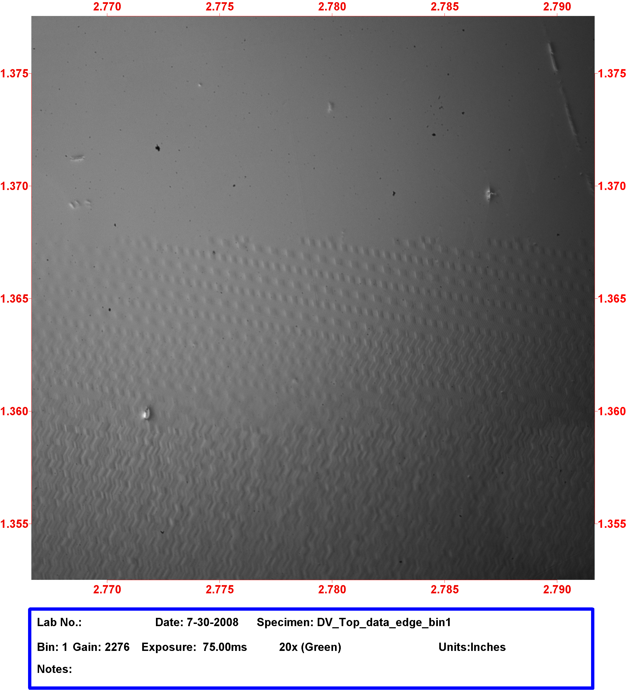

Garnet Imaging
Recent Publication: To appear in IEEE Transactions on Magnetics
Controllability of anisotropy of Bi and Pr containing garnet films
grown on (210)-oriented substrates
Sergiy Tkachuk
1, David Bowen1, Charles Krafft2, Isaak D. Mayergoyz1,31
Electrical and Computer Engineering, University of Maryland, College Park, MD, USA2
Laboratory for Physical Sciences, College Park, MD, USA3
UMIACS, University of Maryland, College Park, MD, USAGrowth and characterization of thin (210)-oriented epitaxial garnet films with Bi and Pr substitutions are reported. The interesting property of these films is the existence of an easy plane of magnetization inclined with respect to the film plane. This property allows for the development of high sensitivity magneto-optic imagers and indicators capable of real time detection of two-dimensional magnetic field patterns. Tailoring of the anisotropy coefficients to achieve the easy magnetization plane and its robustness are discussed. The results of experimental studies of the dependence of the anisotropy properties on the melt composition and growth conditions are reported.
_________________________________________________________________________________________
Upcoming Presentation at the 53rd Conference on Magnetism and Magnetic Materials, Austin, TX Nov. 2008
Paper HE-03. Imaging Capabilities of Etched (100) and (210) Garnet Films.
S. Tkachuk
1, D. Bowen1, C. Krafft2 and I.D. Mayergoyz1,31.Electrical and Computer Engineering, University of Maryland,
College Park, MD; 2. Laboratory for Physical Sciences, College
Park, MD; 3. UMIACS, University of Maryland, College Park, MD
_________________________________________________________
LPS developed garnet stage used to image magnetic patterns on tape.
Digital Video (DV) tape as viewed in the garnet imager system.
